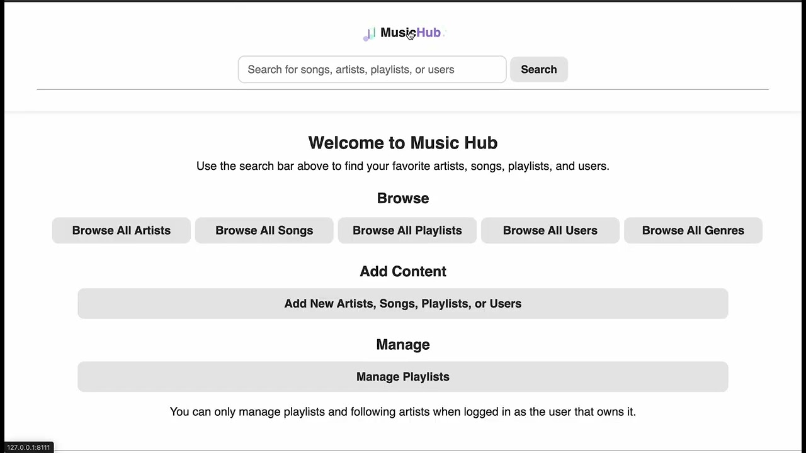
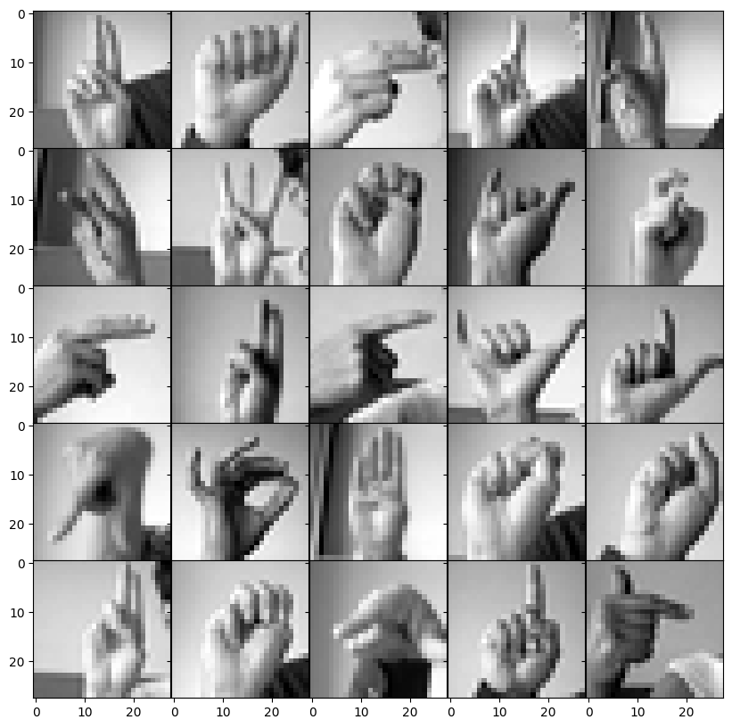
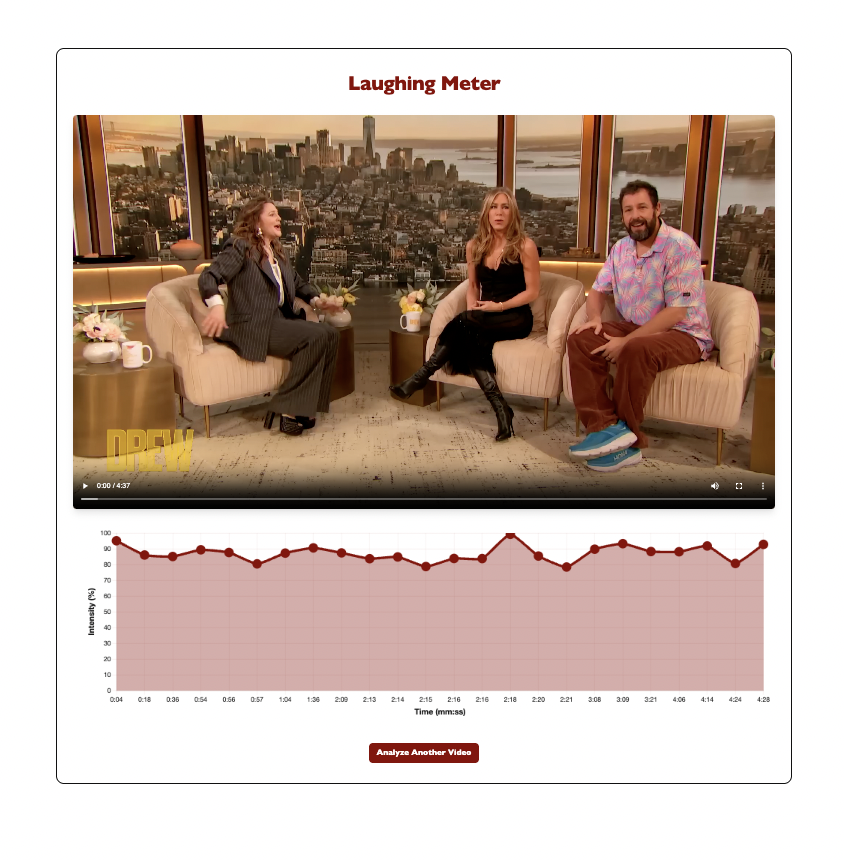
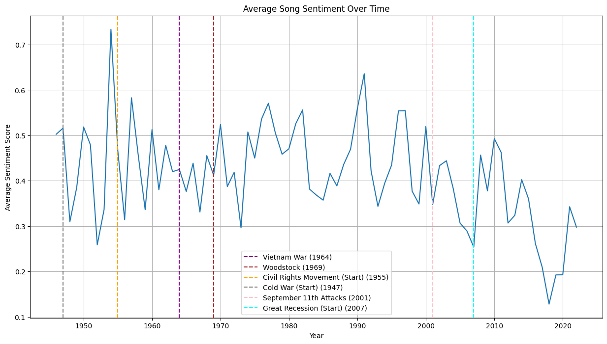
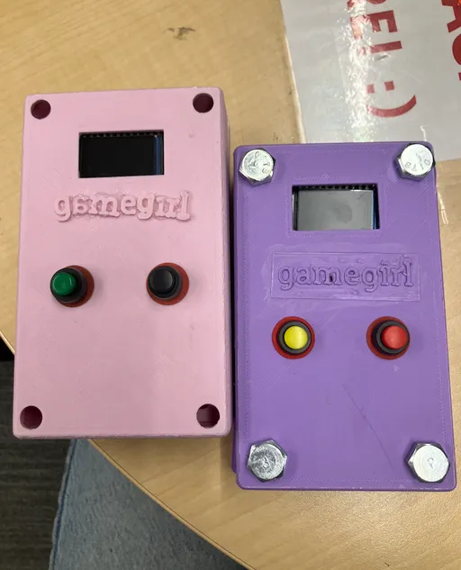

Projects
Social Journaling App
Social journaling application developed through extended design research. Over six months, the project defined six core journaling design principles, followed by prototyping and user research. The tool is a React web app built on top of the TLDraw canvas, exploring collaborative and reflective writing practices. A publication is forthcoming.

MusicHub
MusicHub is a Flask web application that demonstrates relational database design using PostgreSQL. It allows users to browse artists and songs, manage playlists, follow artists, and switch user profiles. The database was populated using data fetched from the Spotify API, with additional custom entries. The application features a simple, clean UI with pastel colors and was built for Columbia University’s COMS W4111 Introduction to Databases course.

Sign Language ML
Sign Language ML is a machine learning project that uses a Convolutional Neural Network built with TensorFlow and Keras to recognize hand signs in real time. It processes live video input with OpenCV, classifying individual frames to explore computer vision for accessible human–computer interaction, achieving over 90% test accuracy.

Laughing Meter
Laugh Meter is a web application that analyzes uploaded videos to detect moments of laughter. Built with Python and Flask, it extracts audio using MoviePy and analyzes sound energy with Librosa and NumPy. The app provides a simple web interface and returns timed laughter intensity data.

Billboard 100 Analysis
This project analyzes Billboard Hot 100 songs (1946–2022) to uncover trends in artist dominance, lyrical focus, and sentiment over time. Using Python, Pandas, NLTK (VADER), and Matplotlib, it combines text analysis, data visualization, and economic context through U.S. GDP comparison.

Worldbuilder
Worldbuilder is a collaborative project developed for Coding for Media Studies in partnership with Columbia MFA students using Cline. I led the UI team, using WebGL to create the Mystic Voice feature, while also contributing across the full stack. The project uses a Firebase backend to track user interactions and focuses on dynamic content generation, interactive storytelling, and world design, with ongoing development of core gameplay systems.

Binary Rush Game
Binary Rush is a two-player interactive race game where players respond to on-screen commands using physical buttons to compete in real time. The project uses ESP32 microcontrollers with ESP-NOW wireless communication, TFT displays, Arduino-based embedded programming, and custom 3D-printed enclosures to explore fast-paced, multiplayer interaction.

Generative Art
Fall…ing in Love is a generative art project developed for COMS 3930: Creative Embedded Systems in which the theme was Fall. It was made in Processing and it was displayed in a Lily TTGO ESP32 microcontroller to generate visual motion that represents two figures meeting and gradually falling in love.